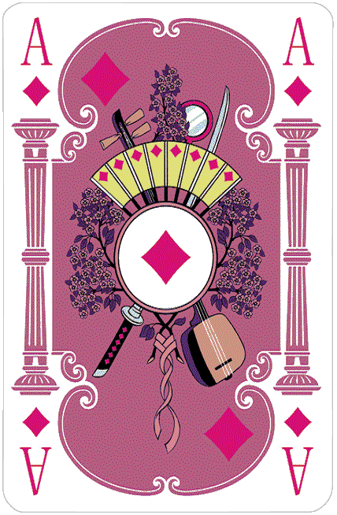
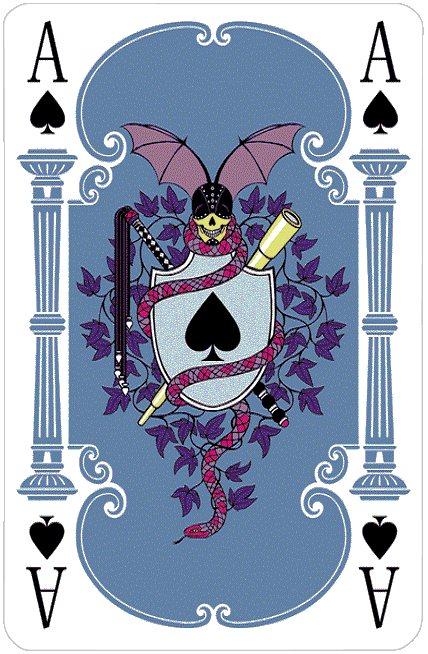
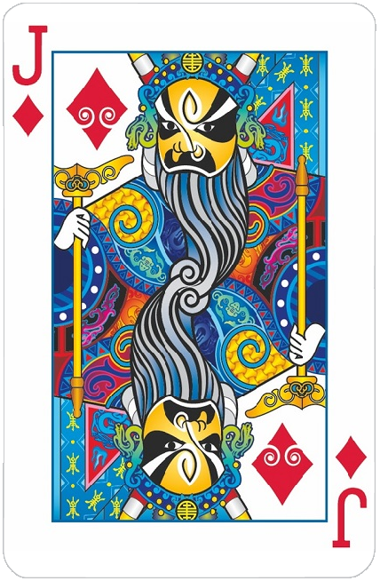
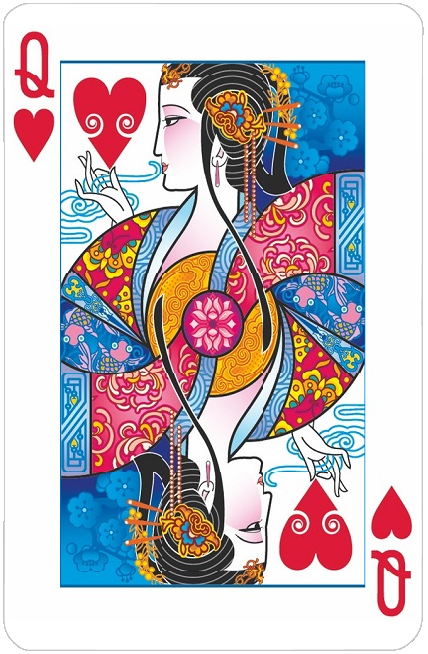
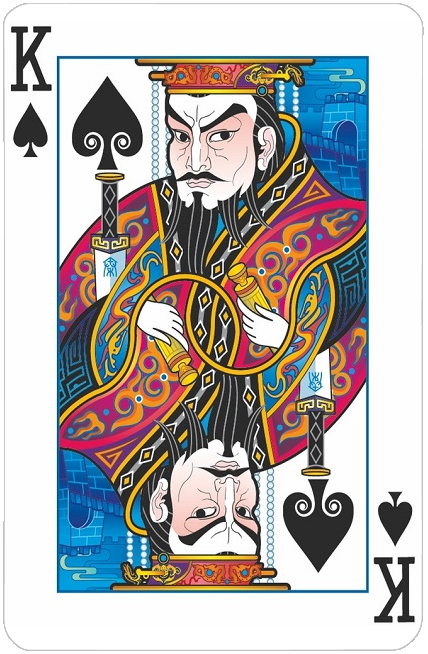
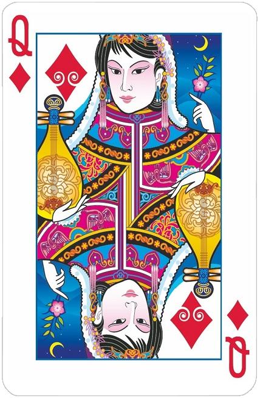
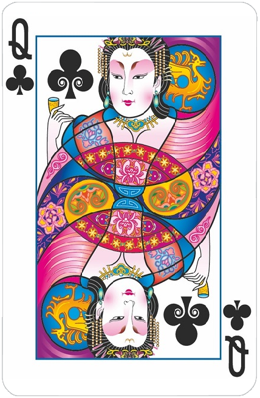
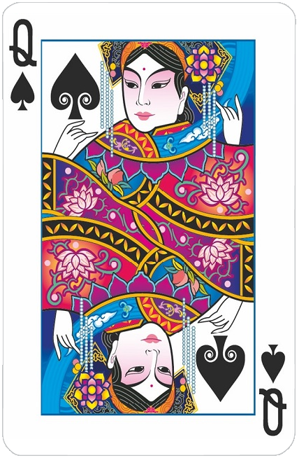
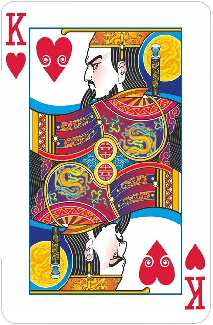
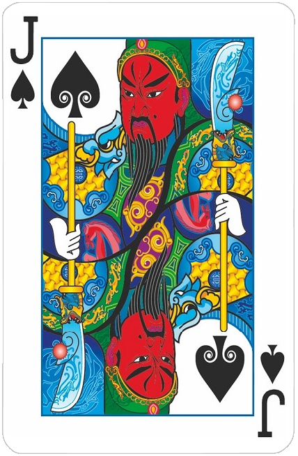

<!-- Modal rule game-->
<div class="modal fade" id="exampleModalCenter" tabindex="-1" role="dialog" aria-labelledby="exampleModalCenterTitle" aria-hidden="true">
    <div class="modal-dialog modal-dialog-centered modal-lg" role="document">
    <div class="modal-content" style="background-color:whitesmoke">
        <div class="modal-header">
        <h4 class="modal-title" id="exampleModalCenterTitle" style="color:black">The Game Rules</h4>
        <button type="button" class="close" data-dismiss="modal" aria-label="Close">
            <span aria-hidden="true">&times;</span>
        </button>
        </div>
        <div class="modal-body">
            <div class="" style="color:black;">
                <p style="text-align:justify">
                    1. The player who has the lowest card play first. <br><br>
                    2. The lowest card is 3 Diamonds. <br><br>
                    3. The picture below is the rank of suits from lowest to highest. <br><br>
                    <center>
                        
                        
                        
                        
                    </center> <br>
                </P>
                <!-- <p style="text-align:justify">
                    4. The pictures below is the rank of suits in the Taiwanese Mode from lowest to highest <br><br>
                    <center>
                        
                        
                        
                        
                    </center>
                </p> -->

                <p style="text-align:justify">
                    4. When in control, a player may play any valid 1 (single), 2 (pair) or five-card combination. 
                    Subsequent players must play a valid hand of the same number of cards which is higher than the previous hand played. 
                    This continues until everyone passes, at which point control is gained again and any valid hand may be played. <br><br>

                    5. The five-card hand rank from the lowest to highest is straight, flush, full house, four of a kind, straight flush <br><br>
                    6. Straight (5 numbers in a row) example:
                    <center>
                        
                        
                        
                        
                        
                    </center><br>
                    Comparison of Straights is based on higher number primarily, 2 became the lowest number in Straight. <br>
                    A-2-3-4-5 and 2-3-4-5-6 are valid but J-Q-K-A-2 is not valid. <hr style="background-color:gray; height: 1px;">
                </P>
                <p style="text-align:justify">
                    7. Flush (5 cards of same suit) example:
                    <center>
                        
                        
                        
                        
                        
                    </center> <br>
                    Comparison of Flush is based on higher suit and higher number primarily, so 2 Spades Flush is the highest. <hr style="background-color:gray; height: 1px;">
                </p>
                <p style="text-align:justify">
                    8. Full House (3 of one number + 1 pair) example:
                    <center>
                        
                        
                        
                        
                        
                    </center> <br>
                    Comparison of Full House is based on higher 3 cards section. <hr style="background-color:gray; height: 1px;">
                </p>

                <p style="text-align:justify">
                    9. Four of a Kind (4 of one number + 1 single) example:
                    <center>
                        
                        
                        
                        
                        
                    </center><br>
                    Comparison of this combination is based on higher 4 cards section. <hr style="background-color:gray; height: 1px;">

                <p style="text-align:justify">
                    10. Straight Flush (both straight and flush) example:
                    <center>
                        
                        
                        
                        
                        
                    </center><br>
                    Comparison of Straight Flush is based on higher number primarily, so 2 Spades Straight Flush is the highest.
                </p>

                <!-- <p style="text-align:justify">
                    12. For Double Penalty Mode, your score penalty will be doubled for each '2' card remain in your hand. <br> <br>
                    13. For Panic Mode, everyone only has 5 seconds to discard a card(s).
                </p> -->
            </div>
        </div>
        <div class="modal-footer">
        <button type="button" class="btn btn-secondary" data-dismiss="modal">Close</button>
        </div>
    </div>
    </div>
</div>